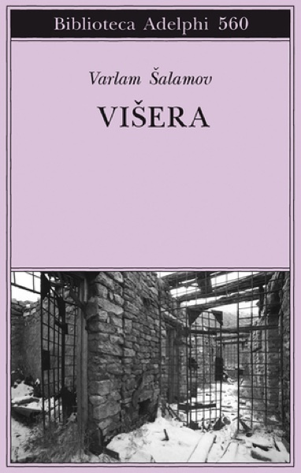
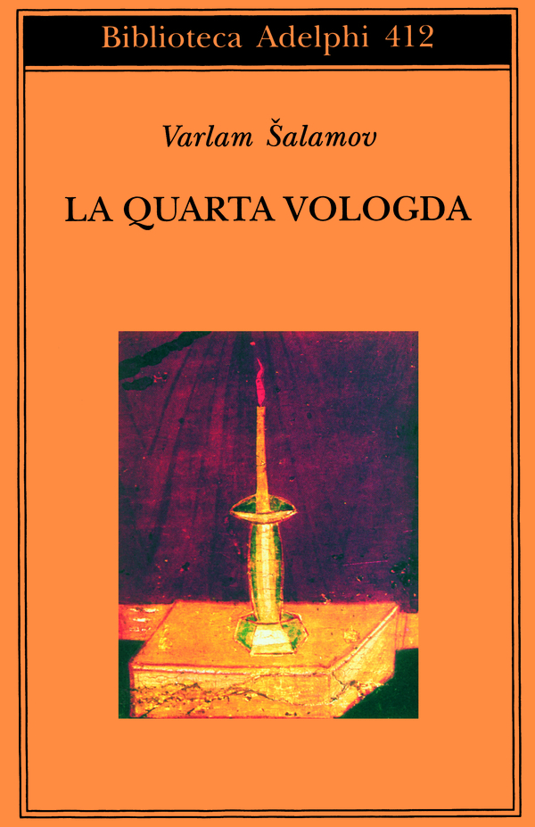
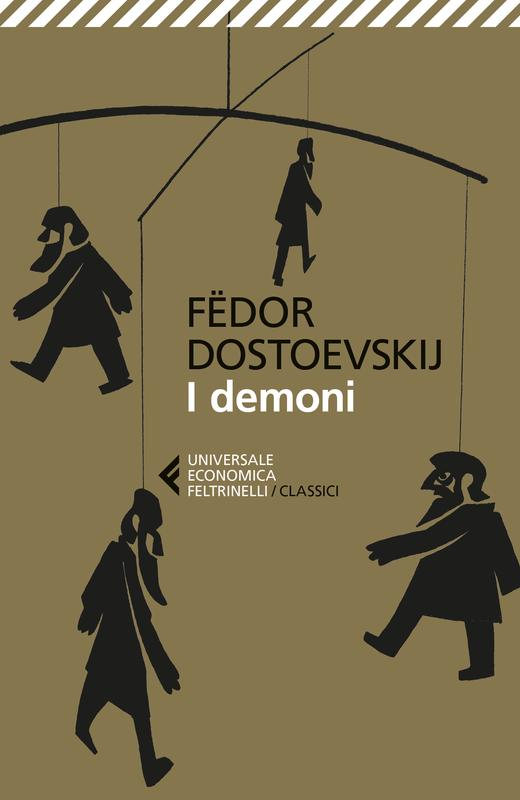
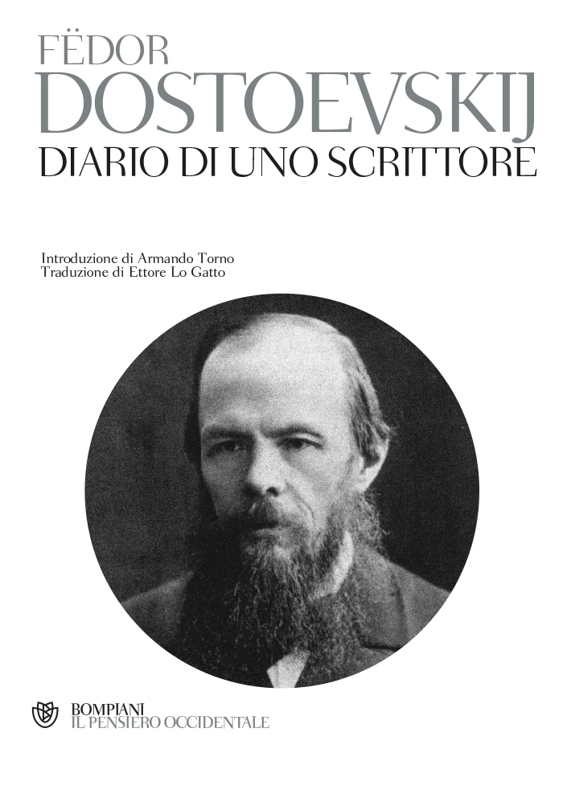

46:00 · 6 OPERE
Varlam Šalamov, I libri della mia vita.
Il filo del discorso
Partendo da I libri della mia vita di Varlam Šalamov, Dr Divago riflette sulla lettura come esperienza capace di sostenere e trasformare una persona. L’introduzione richiama la repressione sovietica e la difficoltà di far circolare testimonianze scomode; una lunga digressione collega questo tema al dovere di verificare le affermazioni di chi occupa una posizione autorevole. Il commento torna poi al rapporto di Šalamov con i libri, al desiderio di una biblioteca propria e alla differenza fra possedere volumi e incontrarne davvero il pensiero. Attraverso alcune pagine lette, il relatore ragiona sulla privazione culturale, sulla scelta dei testi e sulle biblioteche che possono aprire oppure restringere gli orizzonti. La conclusione invita a custodire le condizioni materiali della ricerca e della scrittura, perché le opere possano raggiungere altri lettori.
I libri nel discorso

I libri della mia vita
Copertina: Ibis, 2012
Autore a 46.93 secondi, editore Ibis a 50.12 secondi e titolo a 53.91–66.76 secondi. A 89.10–98.319 secondi si precisa la presenza del secondo saggio, Tavola di moltiplicazione per giovani poeti.
Passaggio 0:53 ↗ · Fonti e libro ↗
Višera
Identificazione probabile
Copertina: Adelphi · Biblioteca Adelphi, 560
Dopo il richiamo al primo campo di prigionia, a 180.69–192.50 secondi viene nominato uno scritto dal medesimo nome, reso in modo incoerente dai sottotitoli.
Passaggio 3:04 ↗ · Fonti e libro ↗
La quarta Vologda
Copertina: Adelphi · edizione di riferimento
Il titolo è leggibile a 244.79–250.52 secondi nel richiamo autobiografico all’autore presentato.
Passaggio 4:04 ↗ · Fonti e libro ↗
Fuga dalla libertà
Copertina: Mondadori, 2022
Fromm e il titolo Fuga dalla libertà sono accostati nel medesimo segmento a 961.40–963.76 secondi.
Passaggio 16:01 ↗ · Fonti e libro ↗
I demoni
Copertina: Feltrinelli · edizione di riferimento
Nel brano letto sulla biblioteca, Dostoevskij e I demoni compaiono a 2268.20–2272.09 secondi.
Passaggio 37:48 ↗ · Fonti e libro ↗
Diario di uno scrittore
Copertina: Bompiani · edizione di riferimento
Il titolo segue immediatamente I demoni nel medesimo elenco di opere di Dostoevskij, a 2272.10–2273.38 secondi.
Passaggio 37:52 ↗ · Fonti e libro ↗